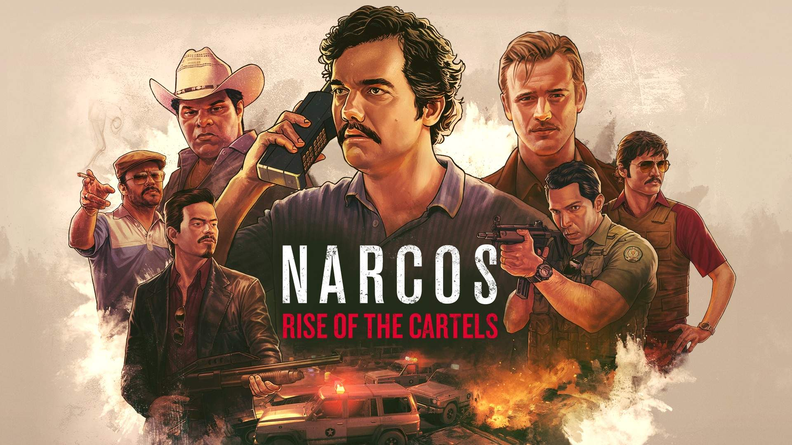
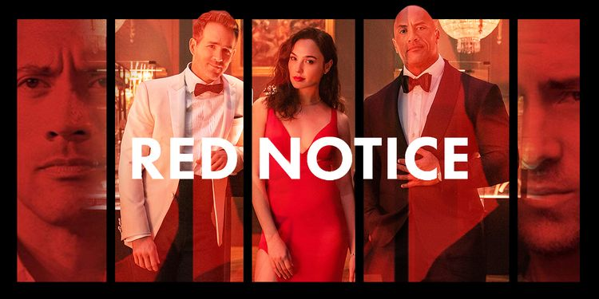
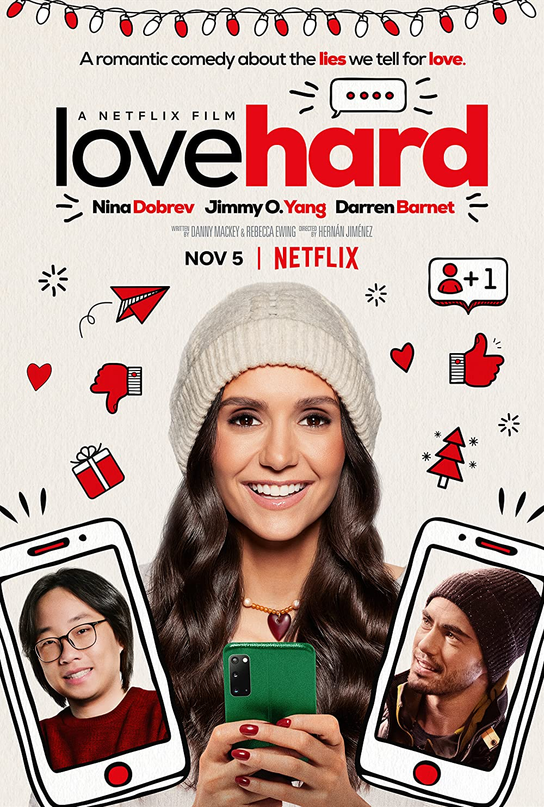

A Nyerd meg az életed Magyarországon a 8. legnézettebb sorozat jelnleg. Nagyon pozitív visszajelzéseknek örvend a felhasználók felől. Ez a kóreai sorozat lebilincselő, kicsit sötét, azonban annál izgalmasabb. Eladósodott szegényeket jelentkeztetnek egy játékra, ahol több milliárd won-t nyerhetnek, tehát kóreai valutát. A játékosok kiesnek különböző párbajok során, a végén csak egy maradhat.
A Narcos a manapság futó egyik legjobb, egyben legrelevánsabb sorozat, amely valaha képernyőre került. Kendőzetlenül mutatja be a kábítószerkereskedelem pénzzel és erőszakkal kikövezett történelmét, informatív, ám egyben rendkívül jól megírt cselekménnyel is operál, hogy az átlag-néző számára is befogadható legyen. A Narcos betekintést enged egy nagyon kényes témába, provokatív jellege miatt pedig világszerte nagy rajongótábort épített ki. Nekem is egyik legnagyobb kedvencem a sorozat, korábban talán a Fargo volt még, ami ennyire elkapott és egymás után daráltam a részeket. Az első két évad a Medellín-kartell híres vezetőjéről, Pablo Escobarról szólt, akit Wagner Moura annyira zseniálisan alakított, hogy öröm volt nézni minden egyes arc-rezdülését, amit a kamera mutatott.


A Különösen veszélyes bűnözők-ben John Hartley (Johnson) az FBI egyik legprofibb ügynöke, aki kézre keríti a világ második leghírhedtebb műkincstolvaját, Nolan Booth-t (Reynolds), a világ leghírhedtebb műkincstolvaja, Sarah Black (Gadot) azonban beleköp mindkettejük levesébe. Hartley-nak és Booth-nak ezért össze kell fogniuk, bár kezdetben mindketten ódzkodnak a csapatmunkától, viszont az ügynök mindenképpen tisztára akarja mosni a nevét, a szélhámos pedig ismét a világ első számú tolvaja szeretne lenni. Sarah azonban mindig egy lépéssel a két férfi előtt jár, és ahol csak tud, keresztbe tesz nekik a kontinenseken átívelő hajsza során, melynek célja az, hogy megkaparintsák Kleopátra harmadik aranytojását. Ahogy az ilyen filmeknél megszokhattuk, az akciódús kaland során a dolgok váratlan fordulatot vesznek - nem is egyszer.
A Szerelem illata a Cyrano de Bergerac cselekmény sokadik változata, ahol Mr. Right rosszul néz ki, de a lelke egy költőé, és belekeveredik egy tervbe, hogy segítsen egy konvencionálisan vonzó személynek egy másik konvencionálisan vonzó személlyel összejönni – aztán jön a történet nagy tanulsága, hogy a személyiség fontosabb, mint a külső.
